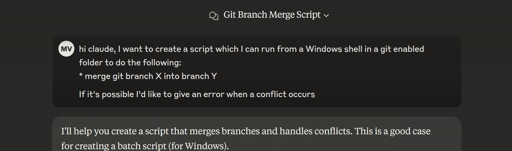

"Is Prompt Engineering the Next Programming Language?"
An Oxford style debate
Presented by Joris van Hien and Marco van de Haar
Inspiration
Hien Luu
www.linkedin.com/in/hienluu
Programming languages...
Most have you have spent years....
- Studying syntax...
- Understanding API's...
Asking the right question!
Introduction
- Purpose: Explore prompt engineering's significance
- Format: Oxford-style debate

"Oxford style debate"
A motion
Audience initial vote
Discussions
Closing arguments
Audience final vote
Winner: Team with largest shift in audience votes
The Motion
Prompt engineering: A new programming language?
What is Prompt Engineering?
Prompt engineering is the practice of crafting and optimizing inputs to AI models to get more accurate, relevant, and useful outputs.

Prompt engineering is the process of crafting and refining input instructions or queries to guide AI systems, like ChatGPT, toward producing the most accurate, relevant, or creative responses.
Initial Vote
Is prompt engineering the next programming language?
3 categories
Syntax and Structure
Specialized Skills and Expertise
Impact and longevity
Let the Debate Begin
For
Against
Syntax and Structure
For the Motion
- Argument #1: Prompt engineering requires structured syntax for optimal results, much like a programming language.

Poorly written prompt
Explain how I can improve the performance my application when retrieving information from the database.
#2. Modular prompts enables reusability, similar to functions.
Please translate the following text to English and determine it's category: "{{text}}". Only use words a 10 year old could understand well. Format your response as follows: Category: (instruction, joke or other) Translation: [the translation]

Argument #3.
Emerging best practices and patterns in prompt design parallel those in programming constructs.
Prompting patterns and techniques
- Few shots
- Chain-of-thought
- Tree-of-thought
- Self-consistency
Example: Chain of thought
Source: Wej et al. (2022)
What about design patterns?
Source: White et al. (2023)
Example: flipped interaction
- For tasks you are not familliar with,
- You might not even know what to ask?
- But the Model probably does!
- So let's ask it, what to ask!
Let's check this out....
Syntax and Structure
Against the Motion
- No formalized syntax or strict rules
- Probabilistic outputs lead to inconsistent results
Syntax and Structure
When Good Prompts Go Bad
Prompt:
Refactor this method to improve readability and performance without altering its behavior.
Use modern C# features and follow best practices for async code and exception handling.
Sounds perfect, right? Clear intent, good structure,
lots of detail…
Even the most careful prompt can hide a forest of assumptions.
Missing Typical Constructs
- ❌ No functions: Can’t extract logic into reusable named steps
- ❌ No reusable variables: Can’t store intermediate results and reference them later like code
- ❌ No control flow: Can’t chain or conditionally apply prompts
Unpredictability
- Outputs can vary from run to run
- Hard to guarantee deterministic behavior
- Relies on model’s training data and random sampling
Unpredictability
Even basic programming prompts yield inconsistent code:
Write a C# method that validates an email address.
- Regex-based — good, but brittle
- MailAddress try-catch System.Net.Mail.MailAddress — legit, but overkill?
- Naive check —
Contains("@")and"."üò¨ - Style and error handling vary every time
Same input. Different code. No guarantees.
Knowledge and Expertise
For the Motion
- #1 Requires understanding AI model workings
- #2 Learning curve comparable to programming languages
- #3 Advanced applications like RAG and agents
Next Token Generator

#1 Specialized knowledge
Tuning parameters
Sampling options and Temperature
Demo: Effects of prompt parameters (e.g., temperature)
#2 Learning curve
A learning curve that parallels learning a programming language
The prompt report

1565 papers
~100 prompting techniques
#3 Evolution!
How we interact with these models evolves!
- Reasoning models, deep research
- RAG
- Agentic A.I.
Knowledge and Expertise
Mastering prompt engineering requires specialized knowledge and skills, just as mastering a programming language.
It requires understanding of AI behavior, crafting precise instructions and continous learning about the ecosystem.
Knowledge and Expertise
Against the Motion
- Natural language lowers the barrier to entry
- Lacks the complexity of traditional programming
- Relies heavily on communication skills
Fewer Prerequisites
- ü߆ No need for algorithms or data structures ‚Äî You don‚Äôt implement mergesort to write a good prompt.
- üí¨ Clarity beats cleverness ‚Äî It‚Äôs more about expressing intent than optimizing logic.
- üéØ You ask questions, not define behavior ‚Äî It‚Äôs persuasion, not precision.
Understanding ≠ Programming the Model
- üìò Understanding how LLMs work helps ‚Äî but it‚Äôs not programming them
- üéõÔ∏è Prompting is about influencing output, not controlling execution
- ü߆ Model behavior is statistical, not deterministic ‚Äî you don‚Äôt write code, you shape probability
Knowing how a language model works doesn’t mean you’re writing in a language.
Tuning Parameters
- üéõÔ∏è Temperature doesn‚Äôt define logic ‚Äî it shapes personality
- üé≤ Same prompt, different mood ‚Äî no consistent behavior
- üß± Programming means control ‚Äî this is suggestion + luck
Tuning Parameters
Write a function that returns the nth Fibonacci number.
- üßä Temp 0.0: Iterative function, clean, minimal, accurate
- üî• Temp 1.0: Recursive version, maybe with comments, or ‚Äúfor fun‚Äù in Python instead of C#
You’re managing creative entropy.
Impact and Longevity
For the Motion
- A Paradigm shift in human-computer interaction
- Or just a fleeting trend???
Explosion of A.I. centered dev tooling


The future of programming?
Example: Windsurf editor

More powerful, and more capable Every Day.
- MCP - Model Context Protocol
- A2A - Agent to Agent protocol TODO
Evolution

"As we stand at the precipice of this AI revolution in software engineering, our role is not to predict a definitive future, but to illuminate the range of possibilities and their implications."
— Vernon Keenan
Impact and Longevity - For the Motion
Prompt engineering will have a lasting impact and evolve similarly to programming languages. As AI becomes integral across industries, it will become an indispensable skill.
Impact and Longevity
Against the Motion
- Trends, not transformation
- Prompt engineering may become obsolete
- Programming remains essential for specificity
Unclear Future
- LLMs might eventually interpret vague prompts effectively
- Could reduce the need for specialized prompt design
- Industry might pivot to new AI paradigms altogether
Closing Arguments
For
↓
Against
↓
Closing Arguments
For the Motion
- Prompt engineering is evolving into a structured discipline
- Clear patterns and best practices are emerging
- Growing ecosystem of tools and frameworks
Key Evidence For
- Standardization of prompt patterns
- Integration into development workflows
- Rising demand in industry
- Academic research and formal methods
Closing Arguments
Against the Motion
- Lacks formal specification
- Dependent on model implementation
- Natural language ambiguity
Key Evidence Against
- Inconsistent results across models
- No compiler or formal verification
- Rapid changes in best practices
- Limited debugging capabilities
Time to Vote
Has prompt engineering earned its place as the next programming language?
Check out the slides?
Or on slack:
#topiconf-prompt-engineering